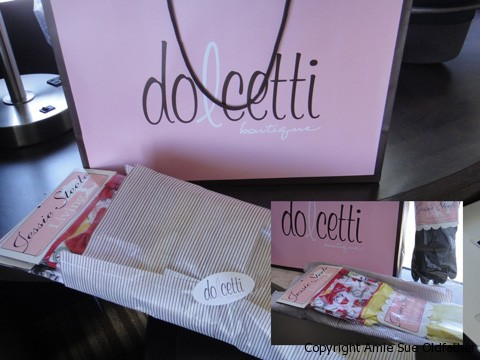
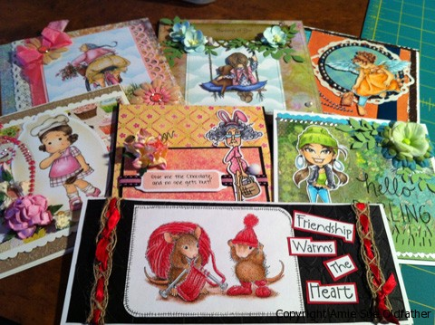

Playing Catch Up
June 11, 2011 – As some of you may know or not know…I have been testing different food processors. Sort of doing a product review to see which one I like best. I have tried and tested a total of 3 different ones.
The latest one that I really have enjoyed was the Cuisinart 14 cup. I bought it at Costco with an instant rebate and got it for $124 but today, I noticed they now have it for $99! Smoking deal. It’s a really nice model that can easily keep up with your day-to-day kitchen tasks.
I was all in love, until…..my lovely husband brought me home his BIG brother, not my husband’s brother silly, the Cuisinart’s brother!! (the one on the right of the picture, which is actually a commercial unit) I think my husband is trying to tell me that he is enjoying the foods I make for him. haha
I think I could throw my flip flops in there and make “butter” out of them in that big boy! Shew! I can’t wait to give it a try. I have some recipes in mind that usually require me to break the batter into 2 batches due to the number of ingredients, but I have complete faith that I will be able to do it all at the same time now. I will keep you posted. The gifts don’t stop there… Bob and I just returned from a trip to Vegas and San Diego. While we were in SD he bought me this special gift too….(see picture)
Those
are some pretty fancy dishwashing gloves! Hmmm, are seeing what I am seeing? ….a heavy duty food processor followed up by dishwashing gloves….hmmm, he thinks that he is so sneaky! haha I really do have to admit though, these rubber gloves are adorable and I love them.
Pretty high-class packaging, all wrapped in tissue paper, for rubber gloves if you ask me. :) So, I can’t wait to try both of them out. I want to make a special raw granola for my friend Jami. We are doing some swapping of services. She makes these amazing greeting cards that are just gorgeous.
So in exchange for some cards, I am making raw food dishes for her. I can’t beat that now can I. I hope one day, I too will be making cards like these, but first I need to gather some supplies and like any hobby, it is an investment.

This is my first attempt at making one. I only have a few markers and don’t have the flesh color so you will have to excuse her nakkidness!
For now, I will stick to being creative in the kitchen. Stay tuned for more recipes!
© AmieSue.com